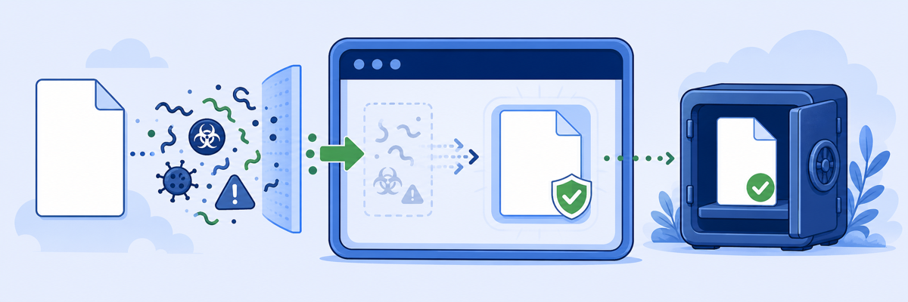
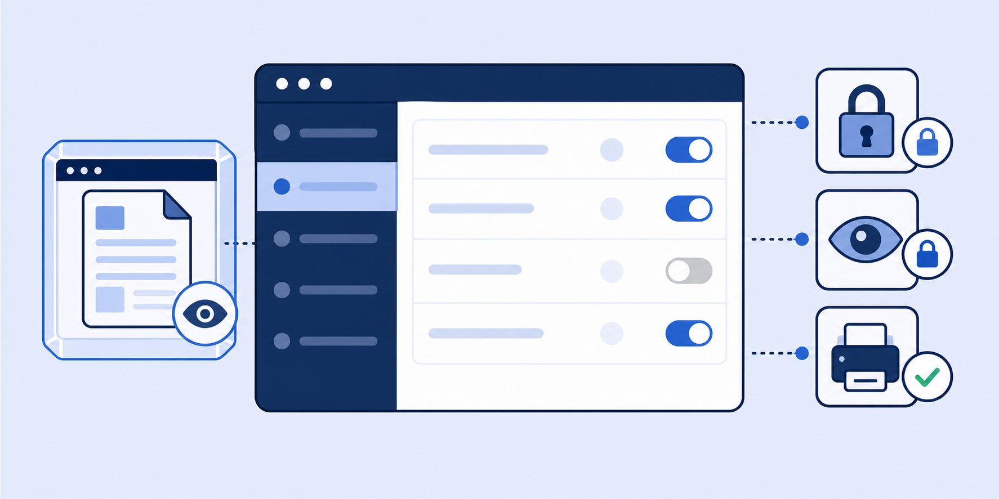
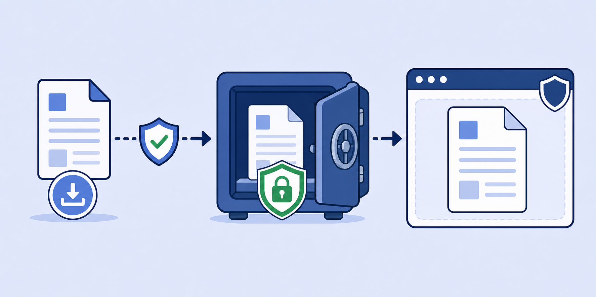

Lab 7: Applying Document Isolation Controls
Scenario: Browser Isolation can intercept file downloads and render them as PDFs inside the isolated container, preventing malicious files from ever reaching the endpoint. The isolated container's Protected Storage holds downloaded files for the duration of the session. When the session ends, Protected Storage is purged.

Document isolation converts every downloaded file into a flattened PDF before the endpoint ever sees it. This eliminates macro-based threats, embedded scripts, and zero-day exploits in Office documents — without blocking file access entirely.
- The "Print Only" Isolation Profile has "Allow Viewing Office Files" enabled. When a user downloads a .docx from an isolated session, what happens to that file before they can read it?
- Protected Storage is described as temporary. What is the security model behind purging Protected Storage when the isolation session ends?
- A user needs to download a file from an isolated session to their local machine. The isolation profile's "File Transfer From: Isolation to local computer" is disabled. What options does the user have?
Task 7.1: Review Document Viewing Settings in the Isolation Profile
1 Inspect the Print Only Profile Security Settings
- In the ZIA Admin Portal, navigate to Administration › Browser Isolation.
- In the list of Isolation Profiles, click the eye icon next to Print Only.
- On the Security tab, scroll down to review:
- Restrict Text Input: Read-Only Isolation — Enabled
- Allow Viewing Office Files: View office files in isolation — Enabled
- Local Browser Rendering: Disabled
- With this profile: clipboard/copy/paste is blocked, page is read-only and watermarked, Office file viewing is enabled, and printing is allowed.
- Click Close.

Task 7.2: Test Document Viewing in Isolation
1 Download and Render a Document in Isolation
- On the Client PC VM, navigate to
https://file-examples.com/index.php/sample-documents-download/sample-doc-download/. - Verify that the site opens in isolation (check for the isolation banner).
- Click DOWNLOAD SAMPLE DOC FILE for the 100kB DOC file.
- The file downloads to the Protected Storage of the isolation session.
- Click the downloaded file in the browser's download bar to have it rendered as a PDF inside the isolated session.
- Review the PDF rendering — note it is a flattened representation of the .doc file.
2 Check Protected Storage and Print
- Click the Zscaler icon in the bottom-right corner of the isolated session.
- Click the document icon and select Show saved files to open Protected Storage.
- Confirm the .doc file appears in Protected Storage.
- Attempt to print the file from within the isolated session.
Note: Isolation can convert many document formats to PDF for viewing: .doc, .docx, .xls, .xlsx, .ppt, .pptx, .pdf, .rtf, and more. Files are never written to the endpoint disk during an isolated session.
